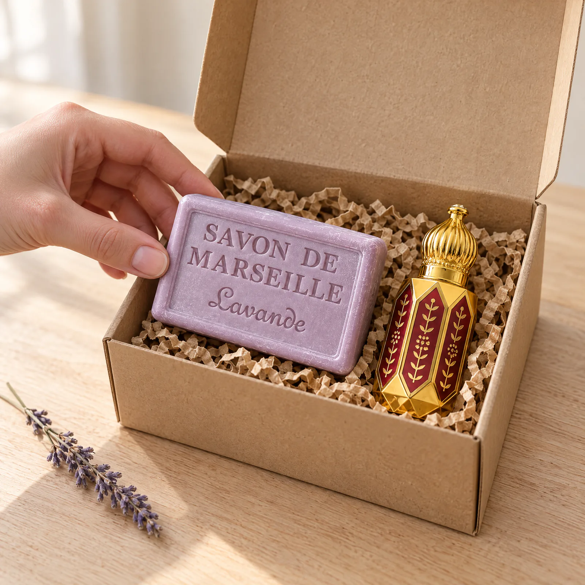
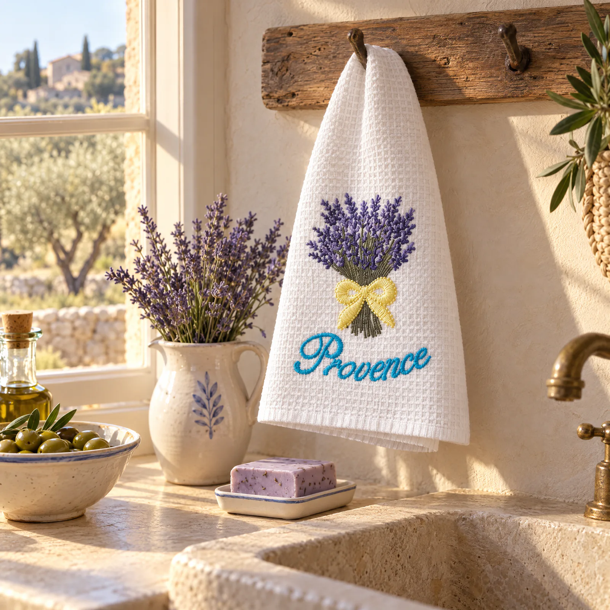

Une maison qui a les mains dans la lavande.

Choisir, préparer,
faire plaisir.
PROVENCAO est une entreprise familiale née en 2008. La lavande, les savons et les petits cadeaux font partie de notre quotidien. Maison Lavandin prolonge ce travail en ligne : une sélection que vous pouvez retrouver et offrir, où que vous soyez.
Notre métier se joue dans des choses très concrètes. Réunir les produits d’un panier. Vérifier un flacon. Préparer un coffret. Recopier les mots que vous avez choisis pour quelqu’un.
Nous préparons aussi les commandes du site au comptoir, avec le même soin.
Ce qui passe par nos mains.
Les muscs
Nous recevons les essences de notre fournisseur, puis les conditionnons au comptoir en flacons de 6 ml, sans les couper ni y ajouter de substance. La maison les garantit sans alcool et 100 % naturelles.
Les cadeaux
Nous réunissons les produits, préparons la boîte et nouons le ruban lavande. Si vous laissez un message, nous le recopions à la main. Aucun prix dans le colis.
Vos commandes
Préparées sous 12 h, expédiées sous 24 h ouvrées depuis Aix-en-Provence. Pour une question ou une attention particulière, vous pouvez nous écrire.
Les petits plaisirs
que l’on garde près de soi.
Un torchon brodé que l’on déplie dans la cuisine. Un panier de lavande posé sur une étagère. Un savon à offrir en passant. Nous aimons ces objets pour la place simple qu’ils prennent dans une journée.
Notre sélection fait se rencontrer cet univers provençal et le geste des huiles de parfum. Quelques produits, choisis pour soi ou pour une personne à qui l’on pense.
Découvrir la sélection
Une question ? Écrivez au comptoir.
Un renseignement sur un produit, une préférence de parfum, un cadeau à préparer : racontez-nous ce que vous cherchez.
Contacter la maison